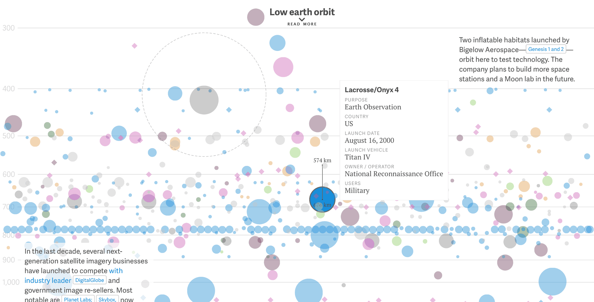
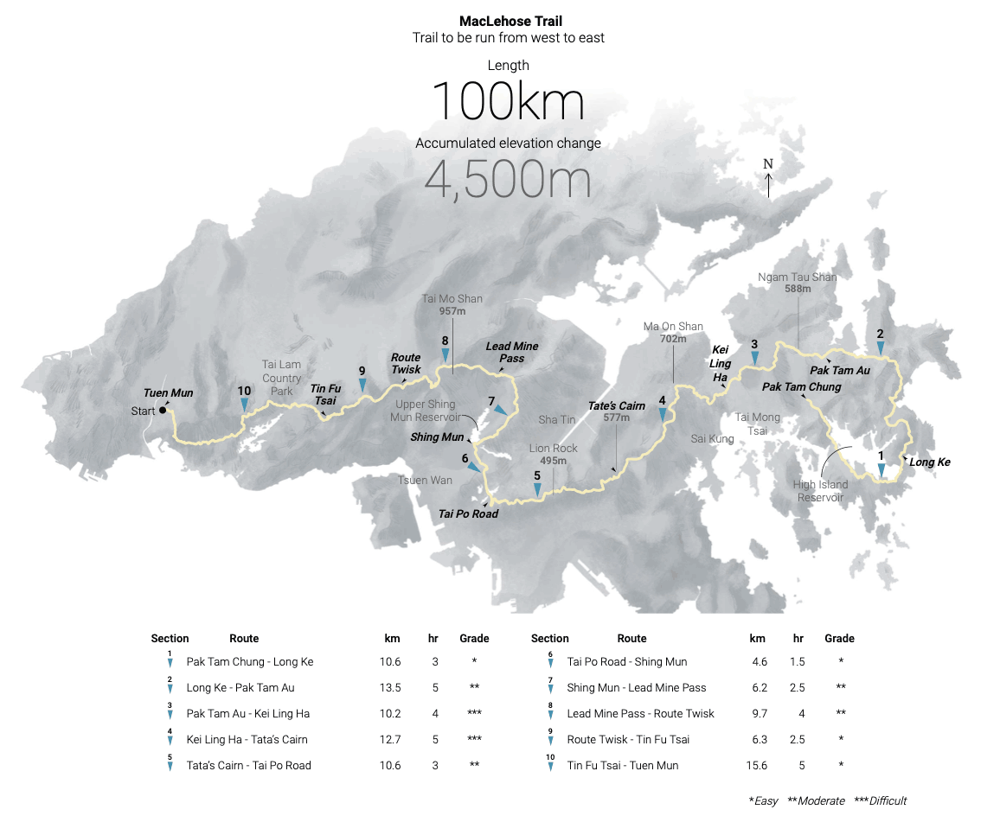
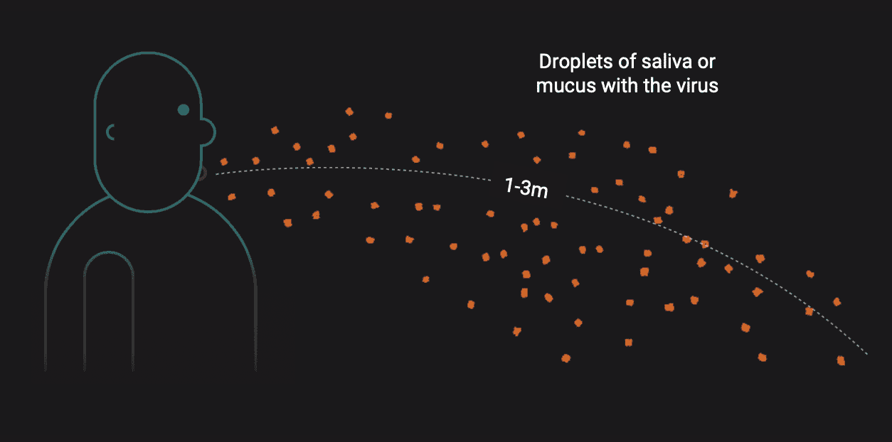
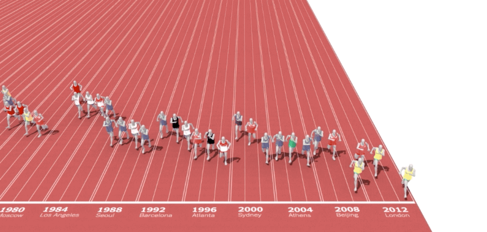
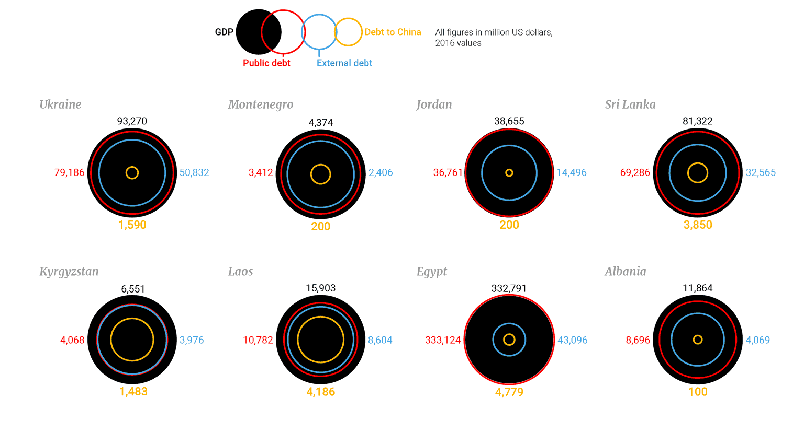
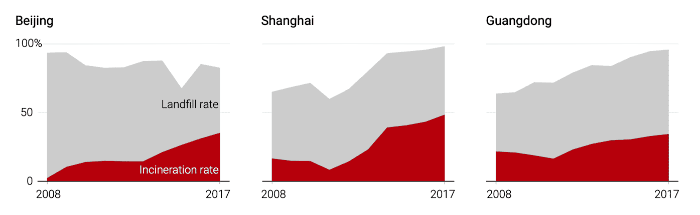
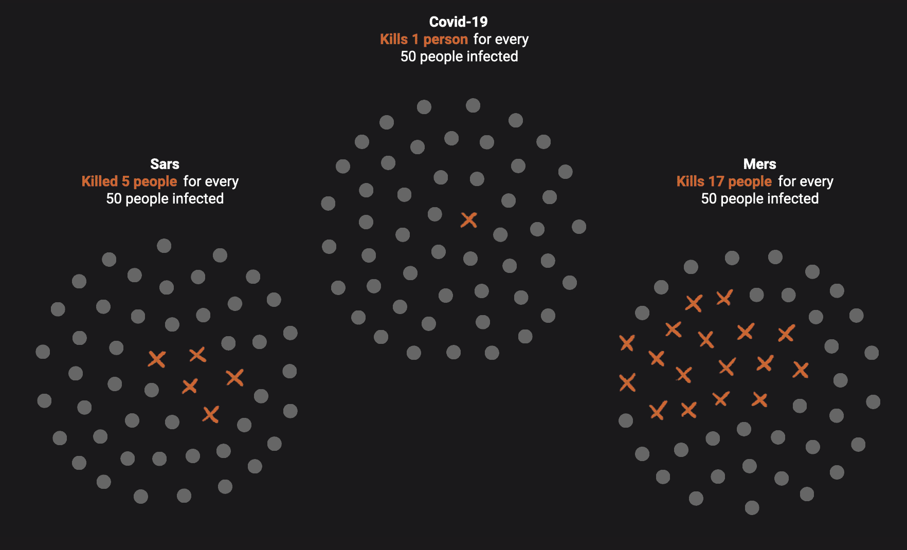

Información en gráficos figurativos

This is every active satellite orbiting earth
Publicado en Quartz.

Hong Kong Four Trails Ultra Challenge
Publicado en South China Morning Post.

Decoding Covid-19
Publicado en South China Morning Post.

Men’s 100-Meter Sprint
Publicado en New York Times.
Información en gráficos no figurativos

How China is looking beyond borders
Publicado en South China Morning Post.

China’s radical new rules to recycle rubbish
Publicado en South China Morning Post.

Decoding Covid-19
Publicado en South China Morning Post.
The faces behind the trigger
Publicado en South China Morning Post.